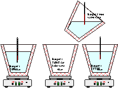
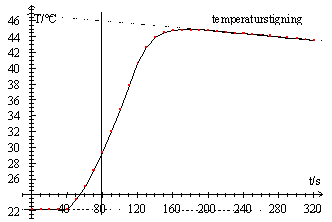

Hydrogenperoxid er et ustabilt stof, som nemt spaltes til vand og dioxygen.
H2O2(aq) ® H2O(l) + ½ O2(g)
Vi skal måle entalpitilvæksten for denne reaktion ved en kalorimetermåling. Ved at tilsætte en katalysator får vi spaltningen til at forløbe på kort tid. Dioxygen dannes egentlig opløst i vand som O2(aq), men det meste afgives fra opløsningen som O2(g) i løbet af reaktionen.
Forsøget falder i tre dele
Bestemmelse af termobægers og magnets varmekapacitet
Måling af entalpitilvækst
Bestemmelse af den formelle koncentration af H2O2(aq) i den anvendte opløsning
| 50
mL varmt vand (45 - 50ºC) afmåles i målecylinder og hældes i et termobæger
2. I termobæger 1, som skal bruges til entalpimålinger senere, hældes
50 mL koldt vand (10-20ºC) og en magnet anbringes deri.
Mål omhyggeligt temperaturen i det varme vand og i det kolde vand. Hæld det kolde vand ud af bæger nr. 1 og hæld det varme vand deri. Omrør straks og mål temperaturen, se Figur 1. |
 Figur 1: Bestemmelse af varmekapacitet |
| Temperatur i bæger nr. 1 | Temperatur i bæger nr. 2 FØR | Temperatur i bæger nr. 2 EFTER | Det varme vand afkølet / ºC | bæger og magnet opvarmet /ºC |
Det varme vand afkøles lidt under en grad fordi bæger nr. 1 og magneten bliver opvarmet:
Varmt vands energiafgivelse = bægers og magnets energioptagelse
Beregn termobægers og magnets varmekapacitet
Temperaturmålinger kan udføres ved hjælp af Datalyse eller manuelt med 30 sekunders mellemrum. Her beskrives måling med Datalyse.
Et elektronisk termometer med serielport forbindes med PC. Datalyse indstilles til måling hvert 10. sekund og 500 målinger.
| Anbring
50 mL H2O2(aq) i skumplastbæger og anbring termoføler.
Start målinger og foretag 10 målinger (målingerne skal ikke stoppes). Straks efter 10. måling tilsættes 10,0 mL Fe(NO3)3 opløsning (c = 0,5 M) og målingerne fortsætter indtil man har en graf der ligner grafen i Figur 2. Stop måling, skriv oplysninger om eksperimentet i Datalyses MEMO og gem målinger. Husk at vælge et oplysende filnavn. Husk at notere iagttagelser under forsøget. Specielt skal farveændringer under reaktionen diskuteres og sættes i relation til katalysatorens funktion. |
 Figur 2 Temperaturstigning ved spaltning af hydrogenperoxid |
Diskuter i rapporten hvordan vi bedst bestemmer temperaturændringen ved reaktionen.
Beregn den udviklede mængde varmeenergi, husk også bægerets varmekapacitet.
Beregn stofmængden af reageret hydrogenperoxid.
Beregn den molare entalpitilvækst.
Sammenlign det eksperimentelle resultat med teoretisk beregnet entalpitilvækst. (opslag i Databog Fysik Kemi)
Dette forsøg kan passende udføres medens temperaturmåling foretages af Datalyse. I rapporten bør det beskrives før temperaturmålingen.
I en konisk kolbe blandes
0,200 mL H2O2-opløsning (med automatpipette - vær meget omhyggelig!)
10 mL H2SO4(aq) 1 M
Blandingen titreres med KMnO4(aq) 0,020 M indtil blivende rødviolet farve viser at ækvivalenspunktet er nået.
I reaktionen indgår redoxparrene MnO4 - | Mn2+ og H2O2 | O2. Afstem reaktionsskemaet og beregn den formelle koncentration c(H2O2)
Den molare standardentalpi for H2O2(aq) = -191 kJ/mol.
Forklar hvordan man kan beregne den molare standardentalpi for H2O2(aq)
ud fra kendskab til molare entalpitilvækster for følgende to reaktioner. TIP:
Hess lov.
H2(g) + ½ O2(g) ® H2O(l) DH0 = -285,8 kJ/mol (Databog Fysik Kemi)
H2O(l) + ½ O2(g) ® H2O2(aq) DH0 = (fra eksperimentet eller Databog)